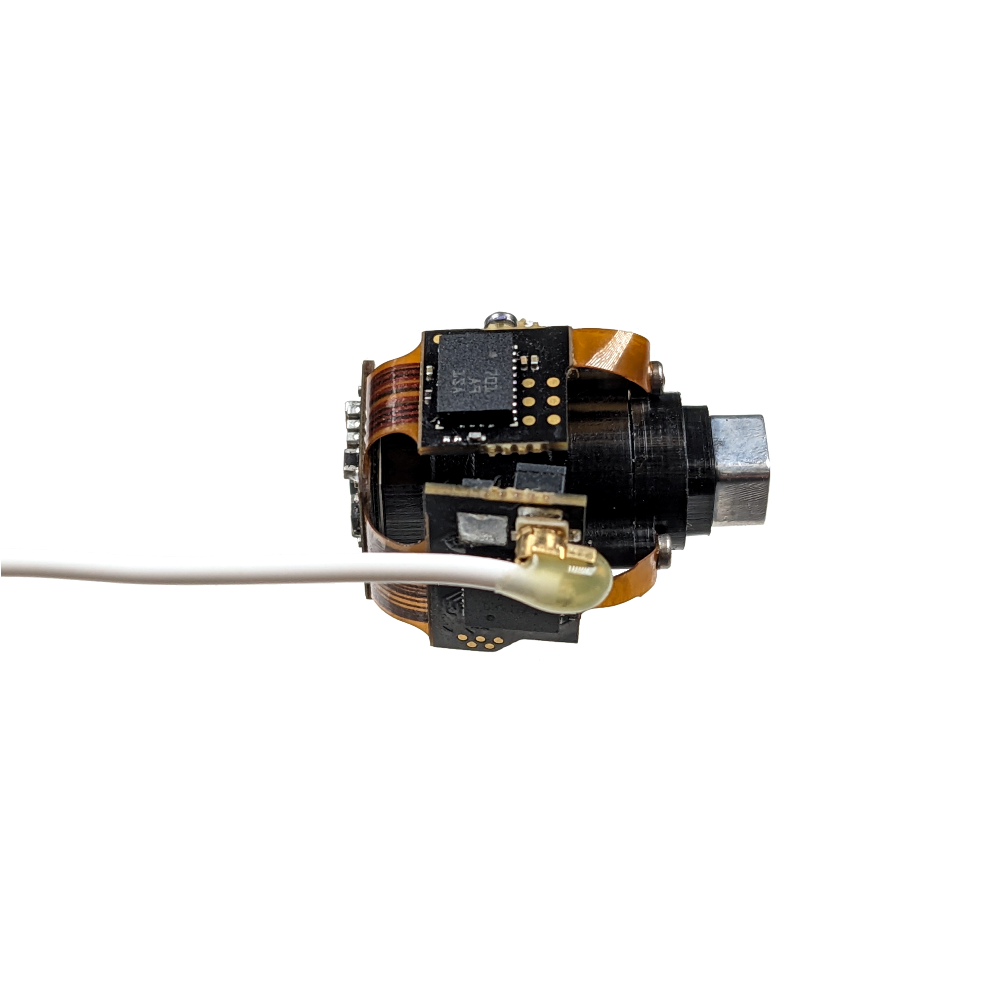

Hardware Connections#
Gather Required Materials#
The required materials include:
Coaxial SMA plug ↔ U.FL plug tether
USB3.0 Micro Type B plug ↔ Type A plug cable
Miniscope-DAQ
UCLA Miniscope v4
PC with USB3.0 & Windows 7 or later
Connect Hardware#
Disconnect any previously connected hardware from Miniscope-DAQ and UCLA Miniscope v4.
Connect only the following hardware for this guide:
Connect Miniscope-DAQ to the UCLA Miniscope v4 using the provided coaxial SMA plug ↔ U.FL plug tether:
Insert the cable’s SMA plug into Miniscope-DAQ’s SMA jack labeled Miniscope. Gently hand-tighten the SMA connector until the connector no longer turns:

Insert the cable’s U.FL plug into UCLA Miniscope’s U.FL jack. Confirm that a click is felt and heard before proceeding from this step:

Connect Miniscope-DAQ to your computer using the provided USB3.0 Micro Type B plug ↔ USB3.0 Type A plug cable:
Insert the cable’s USB3.0 Type A plug into your computer’s USB3.0 Type A jack:

Insert the cable’s USB3.0 Micro Type B plug into the Miniscope-DAQ’s USB3.0 Micro Type B jack located on the Miniscope-DAQ’s back face:


{kind=link}
Confirm that all three indicators on the miniscope-DAQ are illuminated before proceeding from this step as indicated in the above photo.